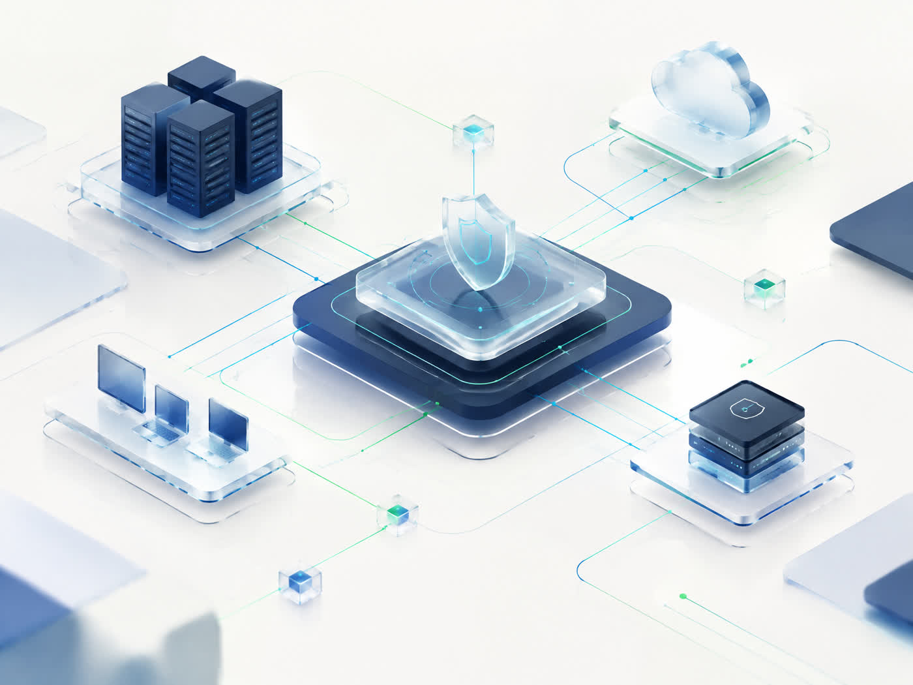

01◫
IT Services
PC, Windows, software, backup, periferice și suport tehnic pentru situațiile de zi cu zi.
- Windows & PC
- Backup & periferice
- Network & support
Servicii IT, website-uri, suport tehnic și securitate cibernetică pentru persoane, creatori, freelanceri și afaceri.

De la un PC care are nevoie de atenție până la un website sau o verificare de securitate: începem cu ce contează pentru tine.
PC, Windows, software, backup, periferice și suport tehnic pentru situațiile de zi cu zi.
Website-uri clare, responsive și ușor de întreținut pentru proiecte personale și afaceri mici.
Security checks și testare autorizată, cu scope clar, dovezi și recomandări de hardening.
Un serviciu bun nu începe cu un tool. Începe cu o întrebare bine pusă, un scope clar și un rezultat care poate fi verificat.
Cum lucrăm ↗Un partener tehnic practic pentru creștere, stabilitate și prezență digitală.
↗Mai mult timp pentru munca ta, mai puțină fricțiune tehnică.
↗Fundații digitale proporționale cu stadiul proiectului.
↗Ajutor clar pentru PC, rețea și situații cotidiene.
↗Un sistem digital pentru claritate în servicii, estimări și cereri.
Vezi detalii ↗120 capitole despre învățare progresivă, laboratoare și apărare.
Vezi detalii ↗Experimente locale, controlate și documentate pentru înțelegerea mecanismelor.
Vezi detalii ↗Hai să vedem ce putem construi.